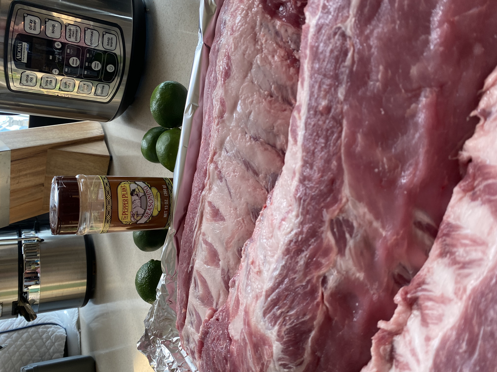
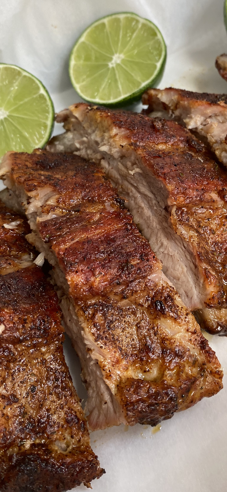

By far, this will be the easiest Ribs you have ever made! It's just 3 ingredients: ribs, The Pepper Plant Seasoning Rub and limes. I like my ribs savory and enjoy having them with a cabbage salad, corn and potatoes. But I have made these ribs to eat with lentils and rice or slathered some BBQ sauce. Whichever way you choose to eat them, you will not be disappointed because they are mouth watering, fall off the bone ribs.
Now that many people are starting to get together after a year of not seeing family and friends, I forsee a lot of gatherings this summer. If you are looking for an easy dish to share with friends and family, that is delicious and transports easily, make these ribs. I just made them for Easter to take to my daughters, and loved that they were so easy to take. I cut them up and placed them on a disposable aluminum tray, with no fus or spills. They were a hit!
Savory Oven Baked Ribs
Ingredients
- 9 pounds of Pork Loin Back Ribs (3 racks)
- 2 tablespoons of The Pepper Plant Seasoning Rub
- 3 Limes (or lemons)
Instructions
- Preheat oven to 400 degrees F.
- Rinse and pat dry ribs.
- Season well both sides of ribs with The Pepper Plant Seasoning Rub.
- Place meat side down of ribs on baking sheet and bake for 45 minutes.
- After the 45 minutes, carefully turn them over with bone side down (meat side up), sprinkle a little more seasoning and place back in oven and bake another 40 - 45 minutes.
- When done, remove baking sheet from oven, squeeze limes on ribs and allow the ribs to rest for 15 minutes.
- If you are going to add BBQ sauce, add the sauce at the very end, the last 5 minutes and broil for 3 minutes to get a nice caramelization of the sauce.
For easy clean-up, line baking sheet with aluminum or parchment paper.
Prep. 15 min. | Cook 1 hrs. 30 min. | Total Time: 1 hours 45 minutes | Serves: 6